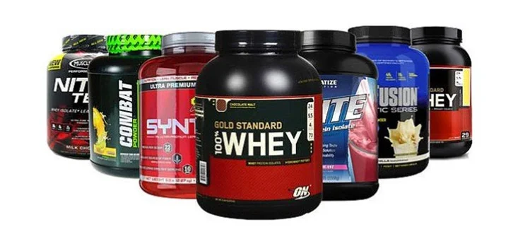

Спортивное питание играет ключевую роль в достижении оптимальных результатов при физических тренировках. В этом контексте белки занимают особое место и считаются важным компонентом здорового спортивного рациона. Давайте рассмотрим, почему белки так важны для спортсменов и как правильно включать их в свой рацион.
Строительный материал для тканей и мышц. Белки служат строительным материалом для наших тканей и мышц. Подвергаясь физическим нагрузкам, мы вызываем микро-травмы в наших мышцах. Затем организм использует белки для ремонта и укрепления мышц, что приводит к их росту и повышению силы. Это существенно для спортсменов, стремящихся к улучшению физической формы и выносливости.
Энергия и восстановление. Помимо своей роли в строительстве тканей, белки также могут использоваться в качестве источника энергии. Это особенно актуально во время длительных и интенсивных тренировок. Белки могут помочь поддержать выносливость и снизить уровень усталости. Кроме того, они играют важную роль в восстановлении после тренировок, помогая восполнить потерянные белки и ускорить восстановительные процессы в организме.
Поддержание иммунной системы. При интенсивных тренировках и физических нагрузках иммунная система может быть подвергнута стрессу. Это делает важным поддержание ее здоровья и функциональности. Белки, включенные в спортивное питание, играют важную роль в образовании пищеварительных ферментов и создании антител, цитокинов и других молекул, необходимых для борьбы с инфекциями в иммунной системе организма.
Белки представляют собой полимерные соединения, состоящие из аминокислот. Существует 24 аминокислоты, из которых строятся белки человеческого организма, и их можно разделить на две группы: заменимые и незаменимые. Важным аспектом вопроса о белках в спортивном питании является различие между заменимыми и незаменимыми аминокислотами, так как они играют разные роли в поддержании здоровья и достижении спортивных целей.
Заменимые аминокислоты: Заменимые аминокислоты - это те, которые организм способен синтезировать самостоятельно. Эти аминокислоты могут поступать с пищей, но они также могут быть получены из других аминокислот, входящих в организм в избытке. В спортивном питании заменимые аминокислоты играют важную роль в обмене веществ и синтезе белков, а также в обеспечении энергетических потребностей организма.
Примеры заменимых аминокислот включают аргинин, глутаминовую кислоту, глицин, цистин и другие. Их наличие в рационе спортсменов является важным для обмена веществ и поддержания общего здоровья.
Незаменимые аминокислоты: Незаменимые аминокислоты - это те, которые организм не способен синтезировать самостоятельно и, следовательно, они должны поступать с пищей. Эти аминокислоты играют ключевую роль в формировании белков и поддержании различных биологических процессов, включая рост и восстановление тканей.
Незаменимые аминокислоты, такие как валин, лейцин, лизин, метионин и другие, имеют особенное значение для спортсменов, так как их дефицит в рационе может ослабить функциональность организма и затруднить достижение спортивных целей. Поэтому в спортивном питании уделяется особое внимание обеспечению поступления всех незаменимых аминокислот в необходимых количествах.
Для максимальной эффективности спортивного питания необходимо уделять внимание как количеству потребляемых белков, так и их качеству. Важно получать разнообразные источники белка, включая мясо, рыбу, яйца, молочные продукты, орехи и бобовые. Разнообразие обеспечивает прием всех необходимых аминокислот, которые являются строительными блоками белков.
В качестве дополнительного источника белка или когда полноценное и разнообразное питание не доступно, можно использовать специализированные препараты спортивного питания.
Протеиновые порошки являются одной из самых популярных форм спортивных белковых добавок. Они представляют собой белки, полученные из разных источников - сывороточный, яийный, мясной, соевый, рыбный, злаковый и другие виды протеина. Протеиновые порошки обогащают рацион белками, улучшая восстановление и рост мышц.
BCAA, включая лейцин, изолейцин и валин, являются ключевыми аминокислотами, способствующими восстановлению и росту мышц. Они могут помочь сократить разрушение мышечных белков во время тренировок и способствовать синтезу белков.
Казеин - это медленно усваиваемый белок, который может обеспечить длительное поступление аминокислот в кровь. Это делает его отличным выбором перед сном или в течение длительных перерывов между приемами пищи, чтобы убедиться, что мышцы получают необходимое питание.
Некоторые спортсмены предпочитают использовать смеси белков (многокомпонентный протеин), которые содержат разные источники белка, чтобы обеспечить разнообразие аминокислот и улучшить усвоение. От приема такой смеси протеина получается эффект, намного превосходящий действие каждого из видов протеина в отдельности. Это не всегда подходит тем, кто принимает смесь сразу после энергозатратного тренинга, когда вместе с углеводами необходимо быстро поднять уровень аминокислот в крови. Для этого нужны протеины с быстрой усвояемостью. Но если тренировки не носят профессиональный характер, прием комплексной смеси вполне допустим.
Для веганов и вегетарианцев доступны веганские белковые добавки, полученные из растительных источников, таких как горох, горчица и гречка. Данный вид добавки имеет множество недостатков, такие как неполноценный аминокислотный состав, низкая скорость усвояемости, и невысокая биологическая ценность. Поэтому прием таких добвок с целью наращивания мышечной массы является неэффективным.
Гидролизованные белки разделены на молекулы меньшего размера, что ускоряет их усвоение и может быть полезным во время тренировок или после них.
Важно понимать, что потребности в белке могут различаться у разных спортсменов в зависимости от их целей и интенсивности тренировок. Профессиональные атлеты, занимающиеся высокоинтенсивными видами спорта, могут требовать больше белка в своем рационе, чем люди, ведущие активный, но менее интенсивный образ жизни. Поэтому для спортсменов включение специализированных препаратов в их ежедневное питание имеет высшую значимость. Это связано с тем, что образование специфических структурных и ферментных белков непосредственно влияет на достижение желаемых тренировочных результатов, что в свою очередь непосредственно отражается на повышении спортивной производительности.
Белки играют фундаментальную роль в спортивном питании, обеспечивая строительство и восстановление тканей и мышц, а также поддерживая энергию и выносливость. Правильное сочетание разнообразных источников белка в рационе спортсменов поможет достичь максимальных результатов в тренировках и улучшить общее физическое состояние. Однако индивидуальные потребности всегда следует учитывать, и при необходимости консультироваться с диетологом или тренером для разработки оптимального плана питания.